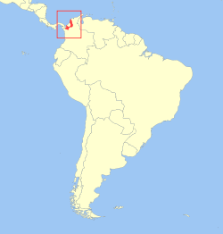

El tití cabeciblanco, tamarino algodonoso, tití pielroja o tamarino cabeza de algodón (Saguinus oedipus) es una especie de primate platirrino de la familia Callitrichidae.
El tití cabeciblanco tiene una distribución muy limitada en el noroeste de Colombia entre el río Atrato y el río Magdalena, en los departamentos de Atlántico, Bolívar, Sucre, Córdoba, y el Noreste Antioqueño, desde el nivel del mar hasta los 1500 metros.
Tienen una cresta de pelos blanquecinos, desde la frente hasta la nuca, que caen hacia atrás. La espalda es parda y los brazos y piernas blancos o amarillentos y la cola marrón en la base y negra en la punta. Pesan en promedio 500g.

Comen frutas, néctar, hojas frescas o retoños, insectos y lagartijas.
Viven en grupos familiares de 3 a 13 individuos, que se pueden unir a otros grupos y permanecer en grupos de hasta 20 individuos.
El período de gestación dura en promedio 170 días, después de los cuales nacen entre una y tres crías y más comúnmente, dos. Las madres cargan las crías la primera semana, luego de la cual el padre y otros integrantes del grupo se hacen cargo, pero entregan cada cría a la madre para la lactancia. Por alguna razón hormonal, mientras la madre procrea, las hijas permanecen inhibidas a pesar de haber llegado a la madurez.